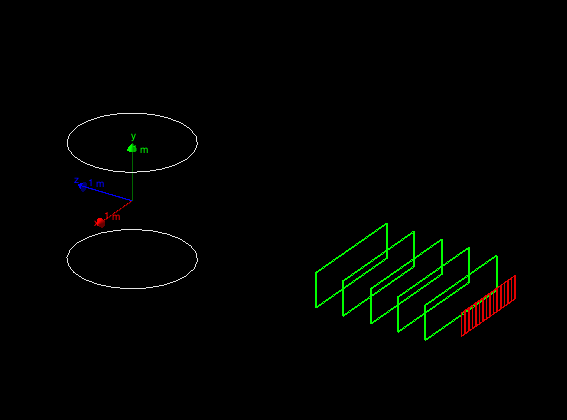
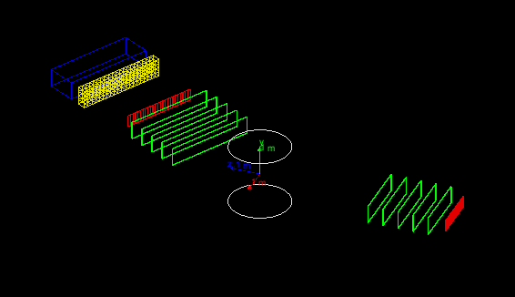

Hands on 3: Build detector, retrieve simulation results
In this third hands-on you will learn how to:
- Create a semi-realistic geometry
- Collect simulation output from sensitive detectors in hits
- Use the event user-action to dump event information from hits on screen
Material:
The problem code for this hands-on session
can be downloaded
here.
For your reference, the complete solution
is also available
here.
Copy the the tar ball to your local area.
Un-tar the code, configure it with cmake, build it, and run it:
$ cd <tutorial> #change to your working directory
$ tar xzf HandsOn3-problem.tar.gz
$ cd HandsOn3-problem
$ cmake .
$ make -j 2 -f Makefile
$ ./G4tut
Note: Ignore compiler warning messages. They will disappear once you complete the exercise.
This geometry should be displayed:

The geometry is same as Hands On 2, as we will start from here to build a two-arm spectrometer.
The first arm is already defined, and in the first exercise you will build
the second arm completed with a calorimeter.
The second arm can be rotated between runs and the magnetic-field value can also be changed at run time using
user defined UI commands.
At the end of this hands on the complete geometry will look like this:

The complete setup will include:
- Each arm with 5 drift-chamber planes to measure the
position of the passing particles (in green).
- Each arm with a hodoscope made of scintillator plates to
measure the time-of-flight of the incoming particles (in red).
- A central magnetic system to deflect the charged particles
(white cylinder).
- Exercise: An electromagnetic calorimeter composed of CsI crystals
(yellow in the picture).
- Exercise: An hadronic sampling calorimeter composed of Lead as
absorber and Scintillator as active material (blue).
Related lectures: Material definition, Geometry 1, Geometry 2
There are 6 steps involved in this exercise to build the geometry.
The application will compile and work correctly only when the first 5
steps are completed (however it is a good idea to try to compile at
each step to fix early trivial errors).
The last step is optional because it has the goal
to change visualization attributes (colors of geometry elements) and
has no effect on simulation results.
Reminder on different ways to create a geometry setup:
- After creating solids and logical volumes you can place physical volumes
via
G4PVPlacement (these have been already covered in Hands On 2).
- You you can place multiple copies of the same logical volumes via
multiple placements.
- Or you can use of
G4PVParametrised to place multiple copies
of the same volume with dimensions/position parametrised
by the copy number.
- You can also use replicas to slice a larger volume in smaller
pieces.
Check the DetectorConstruction.hh file, since many
variables you will need are already defined there.
Exercise 1 Step 1
Implement the second hodoscope.
The second hodoscope is composed of 25 planes of dimensions: 10x40x1 cm.
The hodoscopes tiles are composed of scintillator material.
- Instantiate a single shape and a single logical volume.
- Place 25 physical volume placements in the second arm
mother volume (this mother volume is already created).
Each tile is positioned at Y=Z=0 with respect to the mother volume, while the X coordinates depends on the tile number.
Hint: Check what is done for the hodoscope of the first
arm. Remember dimensions passed to Geant4 solid classes are half dimensions.
Solution
File: DetectorConstruction.cc
// =============================================
// Exercise 1
// Complete the full geometry.
// Note that second arm, by default is rotated of
// 30 deg.
// Step 1: Add an hodoscope with dimensions (X,Y,Z):
// (10,40,1)cm made of scintillator.
// There are 25 planes placed at Y=Z=0 (w.r.t. mother volume)
// hodoscopes in second arm
G4VSolid* hodoscope2Solid = new G4Box("hodoscope2Box",5.*cm,20.*cm,0.5*cm);
fHodoscope2Logical = new G4LogicalVolume(hodoscope2Solid,scintillator,"hodoscope2Logical");
for (G4int i=0;i<25;i++)
{
G4double x2 = (i-12)*10.*cm;
new G4PVPlacement(0,G4ThreeVector(x2,0.,0.),fHodoscope2Logical,"hodoscope2Physical",secondArmLogical,false,i,checkOverlaps);
}
Exercise 1 Step 2
Build the drift chambers.
The second arm contains 5 drift chambers made of argon gas with
dimensions 300x60x2 cm.
These are equally spaced inside the second arm
starting from -2.5 m to -0.5 m along the Z coordinate.
Hint: Use same methods used for step 1
Solution
File: DetectorConstruction.cc
// Step 2: Add 5 drift chambers made of argon, with dimensions (X,Y,Z):
// (300,60,2)cm
// These are placed equidistant inside the second arm at distances from -2.5m
// to -0.5m
// drift chambers in second arm
G4VSolid* chamber2Solid = new G4Box("chamber2Box",1.5*m,30.*cm,1.*cm);
G4LogicalVolume* chamber2Logical = new G4LogicalVolume(chamber2Solid,argonGas,"chamber2Logical");
for (G4int i=0;i<5;i++)
{
G4double z2 = (i-2)*0.5*m - 1.5*m;
new G4PVPlacement(0,G4ThreeVector(0.,0.,z2),chamber2Logical,"chamber2Physical",secondArmLogical,false,i,checkOverlaps);
}
Exercise 1 Step 3
Add a virtual wire plane in the drift chambers.
Add a plane of wires in the drift chambers.
To simplify our problem we do not describe the single wires, instead we add a
new argon-filled volume of dimensions 300x60x0.02 cm
in the center of each of the five drift chambers.
This exercise is technically simple (a single placement), however it
illustrates a very useful concept: we create a single instance of this
volume and we place it once inside the mother logical volume (the
drift chamber logical volume), since the mother volume is repeated
five times, each chamber gets its own wire plane.
We are reducing the number of class instances needed for the description
of our geometry (and thus reducing the memory footprint of our
application, beside making the code more compact and readable).
Solution
File: DetectorConstruction.cc
// Step 3: Add a virtual wire plane of (300,60,0.02)cm
// at (0,0,0) in the drift chamber
// virtual wire plane
G4VSolid* wirePlane2Solid = new G4Box("wirePlane2Box",1.5*m,30.*cm,0.1*mm);
fWirePlane2Logical = new G4LogicalVolume(wirePlane2Solid,argonGas,"wirePlane2Logical");
new G4PVPlacement(0,G4ThreeVector(0.,0.,0.),fWirePlane2Logical, "wirePlane2Physical",chamber2Logical,false,0,checkOverlaps);
Exercise 1 Step 4
Build an electromagnetic calorimeter.
An electromagnetic calorimeter has the goal to measure the energy
of absorbed particles.
Its dimensions are such that an electron or gamma of the typical beam energy is fully absorbed,
while hadrons (such as protons), only leave a fraction of their
energy in an electromagnetic calorimeter (because it is too short).
In our example we implement a homogeneous calorimeter made of a matrix of CsI
crystals (a charged particles emits light when interacting with this
material, the quantity of light produced is proportional to the
energy lost by the particle).
-
Build a 300x60x30 cm CsI calorimeter. The calorimeter is made of a
matrix of 15x15x30 cm crystals. Instead of using placements we show
how to use
parametrised solids. The idea is that the position of the
placement is a function of the crystal number. The parametrization
class is already available for you in
CellParametrisation.
-
Check the method
CellParameterisation::ComputeTransformation(...) to
understand how the calorimeter cells are implemented.
-
The calorimeter should be placed at 2 m downstream along Z in the second arm
mother volume.
Solution
File: DetectorConstruction.cc
// Step 4: Build CsI EM-calorimeter of (300,60,30)cm
// placed at (0,0,2)m in the second arm.
// The calorimeter is made of 80 cells,
// parametrised according to CellParametrisation
// G4VPVParameterisation concrete instance.
// This class parametrize the position of each cell depending
// on its copy number.
// The cells have dimensions 15x15x30 cm.
// (you could use placements or replicas, but here
// we show how to use parametrisations to build geometry)
// CsI calorimeter
G4VSolid* emCalorimeterSolid = new G4Box("EMcalorimeterBox",1.5*m,30.*cm,15.*cm);
G4LogicalVolume* emCalorimeterLogical = new G4LogicalVolume(emCalorimeterSolid,csI,"EMcalorimeterLogical");
new G4PVPlacement(0,G4ThreeVector(0.,0.,2.*m),emCalorimeterLogical,"EMcalorimeterPhysical",secondArmLogical,false,0,checkOverlaps);
// EMcalorimeter cells
G4VSolid* cellSolid = new G4Box("cellBox",7.5*cm,7.5*cm,15.*cm);
fCellLogical = new G4LogicalVolume(cellSolid,csI,"cellLogical");
G4VPVParameterisation* cellParam = new CellParameterisation();
new G4PVParameterised("cellPhysical",fCellLogical,emCalorimeterLogical,kXAxis,80,cellParam);
Exercise 1 Step 5
Implement the hadronic calorimeter
This is a sampling calorimeter made of lead as absorber material
(used for its high density) interleaved with plates of scintillator
(the active material).
It is called sampling because only a fraction of
the energy lost by the particles is measured (the one lost in the active material),
proportional to the total energy
loss and hence to the impinging particle energy (you may be aware of
the problem of non-compensation, but we will not discuss it
here).
Implement the calorimeter using replicas to slice a larger volume into
smaller units.
- Each cell has 20 layers of 4 cm thick lead plate and 1 cm
thick scintillator plate.
- The size of the plate is 30 cm square
- The calorimeter has 10 towers of 2 cells each
Below is a schematic drawing of the calorimeter.
From left to right:
- the full calorimeter with a single tower
- a single tower is divided in two cells
- the third picture shows a single cell with a single layer;
- finally a single layer with the active scintillator tile.
The beam is perpendicular to the screen.
-
The whole Hadronic calorimeter box is made of lead. The size is 3 m in
width, 60 cm in height, and 1 m in depth. It should be placed 3 m
downstream inside the second arm.
-
Replica is defined along one Cartesian axis, define
a tower of 30 cm width. It is also made of lead.
The height and depth of this column are equal to
the full calorimeter dimensions.
-
A cell made of lead has half height of a tower.
-
Each layer in a cell is 5 cm thick. It is made of lead as well.
-
Finally a scintillator tile should be placed inside each layer.
You can now test the setup.
Use UI commands /tutorial/detector/armAngle,
/tutorial/field/value to move the second arm and set the
magnetic field.
The methods DefineCommands gives an example on how
to define application specific commands (this is an advanced topic not
discussed in this Hands-On). Use the
help UI command to get help on commands.
Note that the geometry can be changed only between
runs.
Solution
File: DetectorConstruction.cc
// Step 5: Add a "sandwich" hadronic calorimeter of dimensions:
// (300,60,100)cm.
// The calorimeter absorber is made of lead. It is divided in
// towers of (30,60,100)cm. Use replica along X-axis
// for towers.
// A tower is composed of cells, "stacked" along Y-axis
// Each cell has dimension (30,30,100)cm.
// A cells has "layers" along Z-axis. Each layer has dimensions
// (30,30,5)cm. Also in this case use replicas.
// Finally in each layer there is a tile of scintillator material
// of dimensions (30,30,1)cm
// hadron calorimeter
G4VSolid* hadCalorimeterSolid = new G4Box("HadCalorimeterBox",1.5*m,30.*cm,50.*cm);
G4LogicalVolume* hadCalorimeterLogical = new G4LogicalVolume(hadCalorimeterSolid,lead,"HadCalorimeterLogical");
new G4PVPlacement(0,G4ThreeVector(0.,0.,3.*m),hadCalorimeterLogical,"HadCalorimeterPhysical",secondArmLogical,false,0,checkOverlaps);
// hadron calorimeter column
G4VSolid* HadCalColumnSolid = new G4Box("HadCalColumnBox",15.*cm,30.*cm,50.*cm);
G4LogicalVolume* HadCalColumnLogical = new G4LogicalVolume(HadCalColumnSolid,lead,"HadCalColumnLogical");
new G4PVReplica("HadCalColumnPhysical",HadCalColumnLogical,hadCalorimeterLogical,kXAxis,10,30.*cm);
// hadron calorimeter cell
G4VSolid* HadCalCellSolid = new G4Box("HadCalCellBox",15.*cm,15.*cm,50.*cm);
G4LogicalVolume* HadCalCellLogical = new G4LogicalVolume(HadCalCellSolid,lead,"HadCalCellLogical");
new G4PVReplica("HadCalCellPhysical",HadCalCellLogical,HadCalColumnLogical,kYAxis,2,30.*cm);
// hadron calorimeter layers
G4VSolid* HadCalLayerSolid = new G4Box("HadCalLayerBox",15.*cm,15.*cm,2.5*cm);
G4LogicalVolume* HadCalLayerLogical = new G4LogicalVolume(HadCalLayerSolid,lead,"HadCalLayerLogical");
new G4PVReplica("HadCalLayerPhysical",HadCalLayerLogical,HadCalCellLogical,kZAxis,20,5.*cm);
// scintillator plates
G4VSolid* HadCalScintiSolid = new G4Box("HadCalScintiBox",15.*cm,15.*cm,0.5*cm);
fHadCalScintiLogical = new G4LogicalVolume(HadCalScintiSolid,scintillator,"HadCalScintiLogical");
new G4PVPlacement(0,G4ThreeVector(0.,0.,2.*cm),fHadCalScintiLogical,"HadCalScintiPhysical",HadCalLayerLogical,false,0,checkOverlaps);
Exercise 1 Step 6 (Optional)
Provide visualization attributes for the second arm volumes.
Note that hadronic calorimeter sub-structure is by default made invisible to reduce
visual clutter. This is helpful to hide the geometry details less important
to the simulation.
Solution
File: DetectorConstruction.cc
// Step 6: uncomment visualization attributes of the newly created volumes.
// You may need to review the names of the logical volumes
// visualization attributes ------------------------------------------------
G4VisAttributes* visAttributes = new G4VisAttributes(G4Colour(1.0,1.0,1.0));
visAttributes->SetVisibility(false);
worldLogical->SetVisAttributes(visAttributes);
fVisAttributes.push_back(visAttributes);
visAttributes = new G4VisAttributes(G4Colour(0.9,0.9,0.9)); // LightGray
fMagneticLogical->SetVisAttributes(visAttributes);
fVisAttributes.push_back(visAttributes);
visAttributes = new G4VisAttributes(G4Colour(1.0,1.0,1.0));
visAttributes->SetVisibility(false);
firstArmLogical->SetVisAttributes(visAttributes);
secondArmLogical->SetVisAttributes(visAttributes);
fVisAttributes.push_back(visAttributes);
visAttributes = new G4VisAttributes(G4Colour(0.8888,0.0,0.0));
fHodoscope1Logical->SetVisAttributes(visAttributes);
fHodoscope2Logical->SetVisAttributes(visAttributes);
fVisAttributes.push_back(visAttributes);
visAttributes = new G4VisAttributes(G4Colour(0.0,1.0,0.0));
chamber1Logical->SetVisAttributes(visAttributes);
chamber2Logical->SetVisAttributes(visAttributes);
fVisAttributes.push_back(visAttributes);
visAttributes = new G4VisAttributes(G4Colour(0.0,0.8888,0.0));
visAttributes->SetVisibility(false);
fWirePlane1Logical->SetVisAttributes(visAttributes);
fWirePlane2Logical->SetVisAttributes(visAttributes);
fVisAttributes.push_back(visAttributes);
visAttributes = new G4VisAttributes(G4Colour(0.8888,0.8888,0.0));
visAttributes->SetVisibility(false);
emCalorimeterLogical->SetVisAttributes(visAttributes);
fVisAttributes.push_back(visAttributes);
visAttributes = new G4VisAttributes(G4Colour(0.9,0.9,0.0));
fCellLogical->SetVisAttributes(visAttributes);
fVisAttributes.push_back(visAttributes);
visAttributes = new G4VisAttributes(G4Colour(0.0, 0.0, 0.9));
hadCalorimeterLogical->SetVisAttributes(visAttributes);
fVisAttributes.push_back(visAttributes);
visAttributes = new G4VisAttributes(G4Colour(0.0, 0.0, 0.9));
visAttributes->SetVisibility(false);
HadCalColumnLogical->SetVisAttributes(visAttributes);
HadCalCellLogical->SetVisAttributes(visAttributes);
HadCalLayerLogical->SetVisAttributes(visAttributes);
fHadCalScintiLogical->SetVisAttributes(visAttributes);
fVisAttributes.push_back(visAttributes);
Related lectures: Kernel 1, Scoring 2
In this exercise we will cover basic aspects of retrieving
physics quantities from the simulation kernel.
The basic simulation output is called
hit (a user-defined class derived from G4VHit).
Typically we are not interested in every step in entire detector volumes, but instead we want to
retrieve information only for the detector components we are interested in (e.g. the scintillator tiles
in the hadronic calorimeter, and not the lead absorber).
In Geant4 this is achieved with the concepts of hits and
sensitive detectors (SD): you can attach a SD (a user class
inheriting from G4VSensitiveDetector) to a logical
volume, in this way Geant4 will call your detector code when a particle is
making a step in this specific volume.
hit is a container of information you want to retrieve (e.g. energy deposit in space and time).
Information (e.g. energy deposited along the step) can be retrieved from the
G4Step and a new hit could be created (or an
existing hit is updated).
Geant4 will keep track of all hits created
in the application. These can be retrieved at the end of the event for further
post-processing and writing to output.
We will show how to measure a quantity, for each event,
from the hodoscopes. The goal is to measure at what time and in which hodoscope
tile there was a hit.
The exercise is divided in three parts, and you will have to modify
four files:
HodoscopeHit.hh and HodoscopeHit.cc files
implement the hit class for the hodoscope.
HodoscopeSD.cc implements the hodoscope sensitive
detector.
DetectorConstruction.cc instantiates the sensitive detector
and attaches it to the correct logical volume.
Exercise 2 Step 1
Create a concrete hit class.
In this exercise the concrete hit class represents a data container for only two
quantities:
- an integer value, representing the index of the hodoscope tile
that is fired;
- a double value, representing the time in which the
hodoscope tile is fired.
Reminder: a hodoscope is a simple set of
scintillator fingers that measure the time in which a charged particle
passes through it. It can be used to performed time-of-flight
measurement and coarse-granularity position measurements.
You will need to modify the HodoscopeHit class. The class skeleton is
already prepared, you should add two data members that identify which hodoscope
tile has fired and register the time of the hit.
Implement/modify the Print method to dump
the hit content.
The operators new and delete must be overwritten.
Note on new and delete:
Frequest instantiation and deletion of objects can put some pressure on CPU. Allocating an objcet on the heap and releasing it are (relatively) CPU-intensive operations.
In our case, for each event, many hits may be created
and deleted at the end of each event. Thus the handling of hits may cause some
performance degradation in a complex application.
To mitigate this we use an ad-hoc allocator named G4Allocator that allows for an efficient re-use of memory and
avoid many granular instantiations and deletions of objects of the same kind.
The first time a hit is created, a memory pool is created that can hold
many hits (like in an array). Each time a hit is created
with this overwritten new operator we first look in this pool for an available
pre-allocated memory location. If an empty slot is available, we
re-use it, otherwise we expand the pool to accommodate more
hits. Each time a hit is deleted with this overwritten delete, this memory space is not freed but kept for future re-use.
With this technique we reduce substantially the new/delete cycles needed
for the simulation.
An additional complication is that in multi-threading
environments special attention is needed for the use of allocators.
An object in a worker thread instantiated with this allocator must be deleted by the same thread.
The master thread (and other worker threads) may access such an object and get/set its contents, but cannot delete the object.
G4Allocator must be used for each individual concrete class. It must not be used for a base class from which
several derived classes with different data members could be instantiated.
We recognize this is a topic that requires some
advanced knowledge of C++. But keep these code as they are so that you won't get bad surprise when you extend
the exercise code in the future.
This exercise implements a single sensitive detector and one hit
type. In Hands On 4 additional
sensitive detectors are used with hits in the drift chambers and in
the calorimeters. You can study that code to see additional types
of hits (calorimeter hits are of some interest since accumulate energy
from several steps instead of creating a new hit at each step).
Solution
File: HodoscopeHit.hh
class HodoscopeHit : public G4VHit
{
public:
HodoscopeHit(G4int i,G4double t) ;
virtual ~HodoscopeHit() {}
inline void *operator new(size_t) ;
inline void operator delete(void*aHit);
void Print();
G4int GetID() const { return fId; }
void SetTime(G4double val) { fTime = val; }
G4double GetTime() const { return fTime; }
private:
G4int fId;
G4double fTime;
};
typedef G4THitsCollection<HodoscopeHit> HodoscopeHitsCollection;
extern G4ThreadLocal G4Allocator<HodoscopeHit>* HodoscopeHitAllocator;
inline void* HodoscopeHit::operator new(size_t)
{
if (!HodoscopeHitAllocator)
HodoscopeHitAllocator = new G4Allocator<HodoscopeHit>;
return (void*)HodoscopeHitAllocator->MallocSingle();
}
inline void HodoscopeHit::operator delete(void*aHit)
{
HodoscopeHitAllocator->FreeSingle((HodoscopeHit*) aHit);
}
File: HodoscopeHit.cc
G4ThreadLocal G4Allocator<HodoscopeHit>* HodoscopeHitAllocator = nullptr;
HodoscopeHit::HodoscopeHit(G4int i,G4double t)
: G4VHit(), fId(i), fTime(t)
{}
void HodoscopeHit::Print()
{
G4cout << " Hodoscope[" << fId << "] " << fTime/ns << " (nsec)" << G4endl;
}
Exercise 2 Step 2
Create and manipulate hodoscope hits.
For this exercise you will modify the HodoscopeSD.cc file.
Some part of the code is already implemented, in particular the
initialization of the hits collection, use this code as a reference
for your future applications: it is important to understand the details of
how the registering of hits with the Geant4 kernel works.
What you need to do for this exercise is to modify the method
ProcessHits and implement the logic to extract time and
position. This is the method that Geant4 kernel will call every time a
particle passes through the volume associated with this SD.
We use information stored in the G4Step object: it encodes the information regarding the
simulated step in the geometry volume.
Hint 1: G4Step has two
(G4StepPoint) objects that delimit the step (pre-step and post-step).
Information of the volume should be taken from "pre-step point".
Hint 2: We are simulating a scintillator detector that will
trigger only if some energy has been deposited (i.e. via ionization),
for example if a neutron passes through the detector (without making
interactions) its passage should not be recorded. Check the energy
deposited in the step, if zero do nothing.
Hint 3: More than one step can be done by the same particle in
a single volume (why?), in addition secondaries produced in the volume
will also make steps in the SD. This mean that for a given primary particle we
can have more than one call to the ProcessHits.
A realistic detector electronics will responds with a
single measurement: to simulate this behavior every time a new step is
processed we check if the hit for the hodoscope tile that fired already
exists, if so we update the time information if the new hit happens
earlier than the already recorded one.
Solution
File: HodoscopeSD.cc
G4bool HodoscopeSD::ProcessHits(G4Step* step, G4TouchableHistory*)
{
G4double edep = step->GetTotalEnergyDeposit();
if (edep==0.) return true;
G4StepPoint* preStepPoint = step->GetPreStepPoint();
const G4TouchableHistory* touchable = preStepPoint->GetTouchable();
G4int copyNo = touchable->GetVolume()->GetCopyNo();
G4double hitTime = preStepPoint->GetGlobalTime();
// check if this finger already has a hit
G4int ix = -1;
for (size_t i=0;i<fHitsCollection->entries();i++)
{
if ((*fHitsCollection)[i]->GetID()==copyNo)
{
ix = i;
break;
}
}
if (ix>=0) // if it has, then take the earlier time
{
if ((*fHitsCollection)[ix]->GetTime()>hitTime)
{ (*fHitsCollection)[ix]->SetTime(hitTime); }
}
else // if not, create a new hit and set it to the collection
{
HodoscopeHit* hit = new HodoscopeHit(copyNo,hitTime);
fHitsCollection->insert(hit);
}
return true;
Exercise 2 Step 3
Construct the SD and attach it to the correct logical volume.
We can now create an instance of the HodoscopeSD and attach it
to the correct logical volume. Add a separate instance of the SD to
each arm hodoscope.
Give the names /hodoscope1 and /hodoscope2 to
these SDs. The same class is used for two logical volumes, the
two instances are recognized by Geant4 only via their names.
We are going to modify the method
ConstructSDandField in the DetectorCostruction class.
If you are already a user of older version of Geant4
(up to version 9.6) this is one of the new
main features introduced in version 10.0 to be compatible with multi-threading.
To reduce memory consumption geometry is
shared among threads, but sensitive-detectors are not.
Solution
File: DetectorConstruction.cc
void DetectorConstruction::ConstructSDandField()
{
// sensitive detectors -----------------------------------------------------
G4SDManager* SDman = G4SDManager::GetSDMpointer();
G4String SDname;
G4VSensitiveDetector* hodoscope1 = new HodoscopeSD(SDname="/hodoscope1");
SDman->AddNewDetector(hodoscope1);
fHodoscope1Logical->SetSensitiveDetector(hodoscope1);
G4VSensitiveDetector* hodoscope2 = new HodoscopeSD(SDname="/hodoscope2");
SDman->AddNewDetector(hodoscope2);
fHodoscope2Logical->SetSensitiveDetector(hodoscope2);
// magnetic field ----------------------------------------------------------
fMagneticField = new MagneticField();
fFieldMgr = new G4FieldManager();
fFieldMgr->SetDetectorField(fMagneticField);
fFieldMgr->CreateChordFinder(fMagneticField);
G4bool forceToAllDaughters = true;
fMagneticLogical->SetFieldManager(fFieldMgr, forceToAllDaughters);
}
Related lectures: Kernel 1, Scoring 2
In this exercise we modify ,code>G4UserEventAction, one of the user-action classes, to print on
screen the information collected from hodoscopes at the end of each event.
Different user action provides specific interfaces to control the different aspects
of the simulation.
G4UserRunAction allows the creation of a user-custom
G4Run object and it executes user-code at the beginning and at the
end of a run (this will be covered in Hands On4).G4UserEventAction gives access to G4Event
at the beginning and at the end of each event.
We use this action class in this exercise.G4VUserPrimaryGeneratorAction controls the
creation of primaries. This is a mandatory class to implement.G4UserTrackingAction
gives access to G4Track at the beginning and at the end of each track.G4UserSteppingAction gives access to each G4Step.G4UserStackingAction allows to control the urgency of
each new G4Track (advanced).
Note for users of multi-threaded mode of Geant4:
Multi-threading requires user actions to be thread-private
(differently from initialization classes that are shared among threads).
That means, such user action classes must be instantiated for each worker thread.
G4VUserActionInitialization is the user class to provide a
method
Build() where all user actions are instantiated
(this method is called by each worker thread).
A second method
BuildForMaster is called by the master thread.
Among all user actions the
G4UserRunAction is the only one that can
also be instantiated for the master thread, this is to allow for
reduction
of results from worker threads to master thread
(e.g. sum the partial results of each thread into a
global
result). This will be covered in Hands On 4.
Exercise 3
Using a G4UserEventAction print on screen the number
of hits and the time registered in the hodoscopes.
For this exercise you will need to modify, in EventAction.cc,
the method EndOfEventAction, called by
Geant4 at the end of the simulation of each event.
In this method the pointer to the current G4Event is passed to the user-code. From this
object you will retrieve the hits collections for the two
hodoscopes and dump to screen the collected information.
Part of the EventAction code is already implemented.
Take a moment to study the method
BeginOfEventAction: in this method we retrieve the IDs of
the two collections. Note the if statement that allows
for an efficient search of the IDs, given the collection names, only
once. Searching with strings is a time consuming operation, this
method allows for reducing the CPU time, if many collections are
created this is an important optimization to consider.
Important: The code assumes that, in your HodoscopeSD class, you have named the two SDs as
/hodoscope1 and /hodoscope2 and that they create a hit collection
called hodosopeColl. Change these accordingly if you have modified the names.
The EventAction is instantiated in the
ActionInitialization class. Take a look at it and see how
the EventAction is created.
The solution shows how to introduce some run-time checks of the
effective existence of the hits. While this is not necessary in this
simple code, this is a good code practice:
in large applications the presence of hits collections may be
decided at run time depending on the job configuration.
Solution
File: EventAction.cc
void EventAction::EndOfEventAction(const G4Event* event)
{
// =============================================
// Exercise 3
// Print on screen the hits of the hodoscope
// Step 1: Get the hits collection of this event
G4HCofThisEvent* hce = event->GetHCofThisEvent();
if (!hce)
{
G4ExceptionDescription msg;
msg << "No hits collection of this event found.\n";
G4Exception("EventAction::EndOfEventAction()",
"Code001", JustWarning, msg);
return;
}
// Step 2: Using the memorised IDs get the collections
// corresponding to the two hodoscopes
// Get hits collections
HodoscopeHitsCollection* hHC1 = static_cast
<HodoscopeHitsCollection*>(hce->GetHC(fHHC1ID));
HodoscopeHitsCollection* hHC2= static_cast
<HodoscopeHitsCollection*>(hce->GetHC(fHHC2ID));
if ( (!hHC1) || (!hHC2) )
{
G4ExceptionDescription msg;
msg << "Some of hits collections of this event not found.\n";
G4Exception("EventAction::EndOfEventAction()", "Code001", JustWarning, msg);
return;
}
// Step 3: Loop on the two collections and dump on screen hits
// Hodoscope 1
G4int n_hit = hHC1->entries();
G4cout << "Hodoscope 1 has " << n_hit << " hits." << G4endl;
for (G4int i=0;i<n_hit ;i++)
{
HodoscopeHit* hit = (*hHC1)[i];
hit->Print();
}
// Hodoscope 2
n_hit = hHC2->entries();
G4cout << "Hodoscope 2 has " << n_hit << " hits." << G4endl;
for (G4int i=0;i<n_hit ;i++)
{
HodoscopeHit* hit = (*hHC2)[i];
hit->Print();
}
With successful execution (try, e.g., /run/beamOn 100), you should see printout like this (actual numbers may vary):
G4WT0>
G4WT0> >>> Event 96 >>> Simulation truth : proton (-16.232228069311,0,994.22834019976)
G4WT0> Hodoscope 1 has 1 hits.
G4WT0> Hodoscope[7] 6.8585277990143 (nsec)
G4WT0> Hodoscope 2 has 1 hits.
G4WT0> Hodoscope[8] 59.288664870039 (nsec)
G4WT0> --> Event 97 starts with initial seeds (47098457,35307784).
G4WT0>
G4WT0> >>> Event 97 >>> Simulation truth : proton (-5.5136395233946,0,990.67454918706)
G4WT0> Hodoscope 1 has 1 hits.
G4WT0> Hodoscope[7] 6.8697647503318 (nsec)
G4WT0> Hodoscope 2 has 1 hits.
G4WT0> Hodoscope[8] 59.535676954411 (nsec)
G4WT0> Thread-local run terminated.
G4WT0> Run Summary
G4WT0> Number of events processed : 49
G4WT0> User=0.360000s Real=0.184613s Sys=0.000000s [Cpu=195.0%]
Run terminated.
Run Summary
Number of events processed : 100
User=0.360000s Real=0.185584s Sys=0.010000s [Cpu=199.4%]
Created by:
Andrea Dotti
, May 2018
Updated by:
Makoto Asai and
Maurizio Ungaro
, February 2024